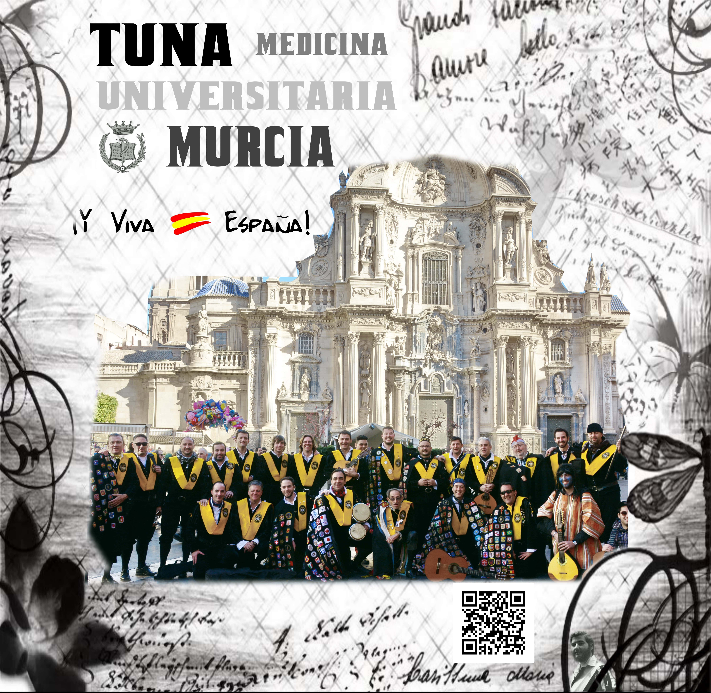

¡Y VIVA ESPAÑA! (2003)  1. ¡Y Viva España! 2. Los Ojos de la Española 3. Clavelitos 4. Granada 5. España Cañí 6. Noche de Ronda 7. México 8. Murcia 9. La Paloma 10. Guantanamera 11. Bésame Mucho 12. El Cóndor Pasa 13. Amapola 14. Adelita 15. Cielito Lindo 16. La Primavera 17. Suspiros de España 18. Medicina Tuna Mix
PAPARAJOTES (2000) 1. Paparajotes 2. Murcia 3. Dime que sí 4. Amorosa Guajira 5. Vereda Tropical 6. México 7. Siboney 8. Concerto grosso a la rústica 9. Fuego bajo tu piel 10. Celos 11. Ronda Sefardí 12. Amapola
TUNA MIX (1994) 1. Medicina Tuna Mix 2. Suspiros de España 3. Uno 4. Dos Palomitas 5. La Primavera 6. Noche de Ronda 7. Ansiedad 8. La Banda 9. Los Ojos de la Española 10. Tierra 11. María Va 12. Te Quiero 13. Canon 14. Descarga de Son Cubano